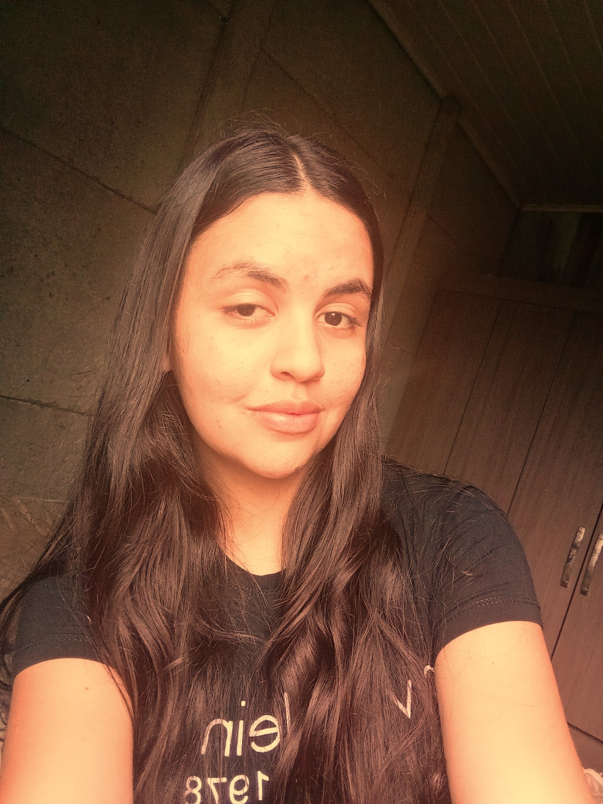
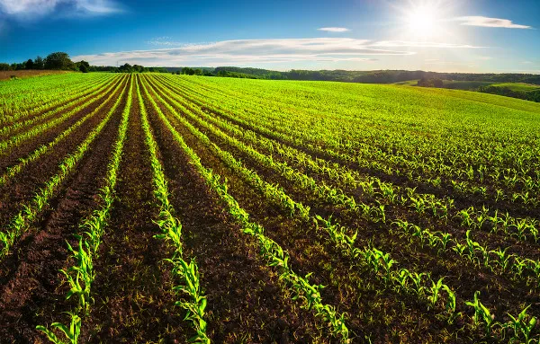
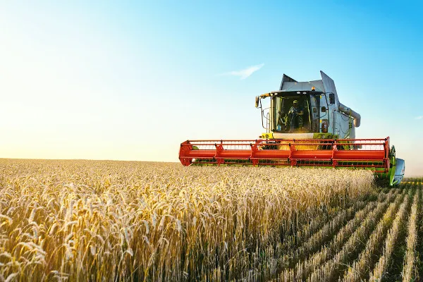
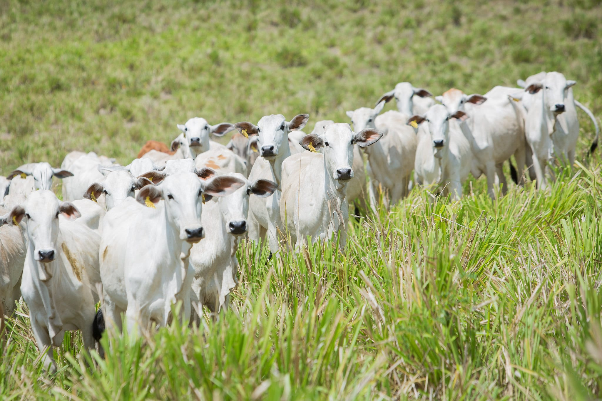
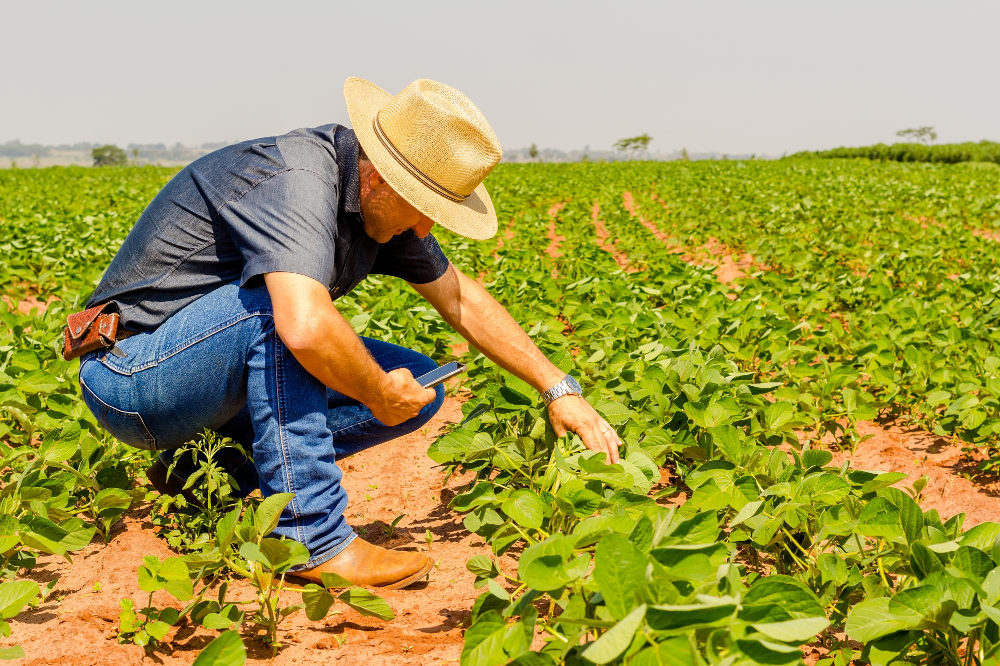

Quem desenvolveu o projeto?

Marcelo



A agropecuária é uma das atividades mais importantes para o desenvolvimento econômico e social do Brasil. Ela reúne a agricultura e a pecuária, responsáveis pela produção de alimentos, matérias-primas e diversos produtos essenciais para a população.
Além de abastecer o mercado interno e externo, a agropecuária gera empregos, movimenta a economia e contribui para o crescimento das comunidades rurais e urbanas, sendo fundamental para o desenvolvimento do país.

A tecnologia tem transformado a agropecuária moderna. Máquinas agrícolas, sistemas de irrigação, monitoramento climático e novas técnicas de produção ajudam os produtores a aumentar a produtividade e melhorar a qualidade dos alimentos produzidos.
Essas inovações permitem reduzir desperdícios, utilizar os recursos naturais de forma mais eficiente e tornar a produção cada vez mais sustentável e responsável com o meio ambiente.

tema do Agrinho 2026 destaca a importância do equilíbrio entre produção e preservação ambiental. Produzir de forma sustentável significa atender às necessidades da população sem comprometer os recursos naturais das futuras gerações.
Com responsabilidade ambiental, inovação e planejamento, a agropecuária pode continuar crescendo, contribuindo para o desenvolvimento econômico e garantindo um futuro mais sustentável para toda a sociedade.

